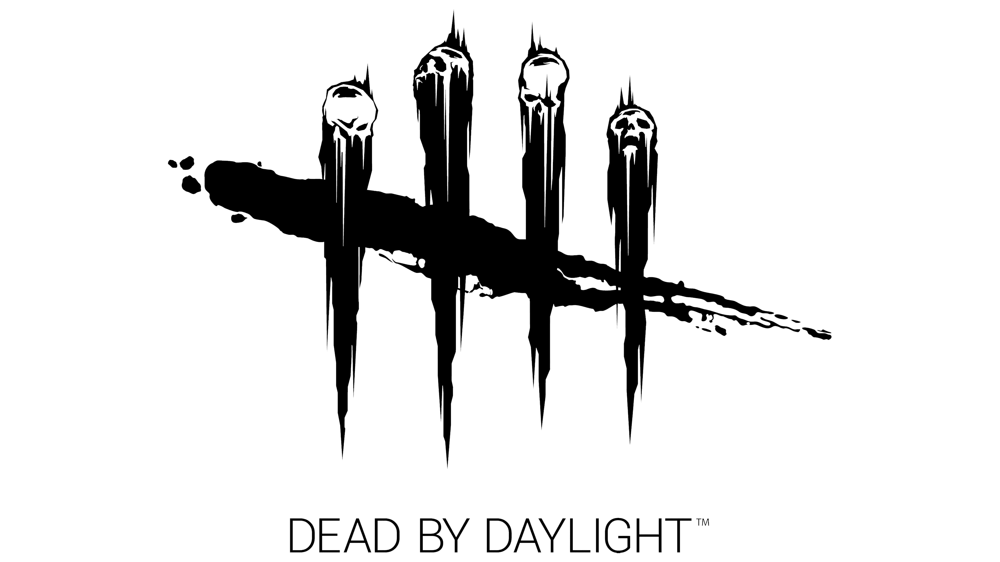

On this page I will be giving you information about who I am and what my interests are.
Who am I?
Greetings! My name is Lars Sonke. I am 20 years old and I was born 12 November 2000. Since I was born I have been living in 's-Gravenpolder with both my parents. I have no experience with coding yet but I am looking forward to learning more about it!
Hobbies
- Playing video games
- Drawing
- Watching anime
- Cooking
The main thing I spend my free time on is playing video games, my favorite ones in order I play the most nowadays are:
- League of legends
- Genshin impact
- Valorant
- Dead by Daylight 


Other information about me
Just a bit of random information about me:
Since I was 6 I started playing soccer but I stopped when i was 17, I am considering to start playing soccer again but I am not sure yet.
I used to watch a lot of movies. My favorite movie used to be Real Steel, which is a movie about different types of robots who are controlled by humans to fight eachother for money, fame and other prizes. After I started watching anime I kind of stopped watching movies.
My favorite anime is Danganronpa, which is a show about a few students who get locked up into their school building, all of the students have a special talent, such as being good at baseball or being good at gambling. After they get locked up they need to kill eachother in order to leave the school. Once a kill has happened an investigation will start and it will be followed by a class trial. The students will try to figure out who the culprit is during the class trial and if they find the right culprit that person will be executed, if they find the wrong culprit the entire class except for that person will be executed.